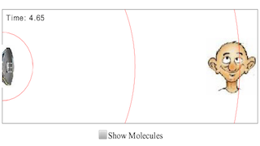

This simulation shows a speaker (the source) emitting sound waves towards a man (the detector). Students explore how these waves propagate through a medium (in this case, the air) like a longitudinal wave they studied in Chapter 17.